架空の駅のゲートレス改札で試す
ArtCraft 系の 13 個の CLI は、画面を開かずにコマンドだけで動く制作ツールです。ここではタッチもゲートもない顔パス改札の案件を 1 件想定し、提案資料から完成動画までを CLI だけで作りました。
13ツール48掲載したコマンド約 25 秒それらの実行時間の合計
題材は、ニュースなどで一般に紹介されている「タッチもゲートも不要の顔パス改札」の考え方です。通路の上方のカメラで歩いている人の顔を認証し、結果を音と画面で伝えます。駅名、システム名、数値、データはすべて架空または仮の値で、特定の企業や製品を表すものではありません。顔認証は実行しておらず、人物の位置と判定結果を時系列データとして用意したシミュレーションです。
| 舞台 | あさなぎ線 ひかり台駅(架空) |
|---|---|
| 通路 | 長さ 12 m、幅 6 m、ゲートなし(仮) |
| 認証エリア | 通路入口から 3.0〜7.0 m(仮) |
| 処理能力の目標 | 1 分間に 100 人 |
| 解像度 | カメラ 3840×2160、画面 1920×1080(仮) |
| 人物 | 動き | 画面 | 音 |
|---|---|---|---|
| A | 認証エリアを通る | 緑の人型 + 案内文 | OK 音 |
| B | 認証エリアを通る | 赤の人型 + 案内文 | NG 音 |
| C | 手前を横切る | 灰色の人型 | なし |
タッチもゲートもなく、歩いたまま認証します。多くの人が続けて通れます。
結果はスピーカーの音と案内スクリーンの表示で、その場で知らせます。
ゲートがないので、車椅子の人や大きな荷物を持つ人も通りやすくなります。
駅係員がブラウザで見る想定の画面です。下の画面はそのまま操作できます。データは架空の 240 件で、最新の 3 件は完成動画の人物 A、B、C です。履歴には匿名 ID だけを持たせ、顔画像と氏名は記録しません。設計は FigCraft と GridCraft で行い、画面そのものは HTML と JavaScript で実装しています。
| 通路 | 匿名 ID | 結果 |
|---|
ここに載せた画像、音声、動画はすべて CLI の実出力です。掲載したコマンドは、終了コード 0 で成功したものだけです。作業フォルダは build/ で、長いコマンドは途中を省略して表示しています。コピーすると全文を取得できます。
企画の工程 / プレゼンテーション
v0.16.0
コマンド 331
スライドを作成し、PowerPoint 形式、PDF、画像に書き出します。図形、画像、テーマフォントもコマンドで指定できます。 PowerPoint に近い位置づけのツールです。
導入提案のスライド 4 枚。システム構成図は図形コマンドで描き、最後のスライドに PhotoCraft の画像を貼りました。
読み: .deckcraft / .pptx 書き: .deckcraft / .pptx / .pdf / .md / .png / .jpg / .gif
補足 座標は 960×540 pt です。日本語を揃えるには design.fonts でテーマフォントを指定します。
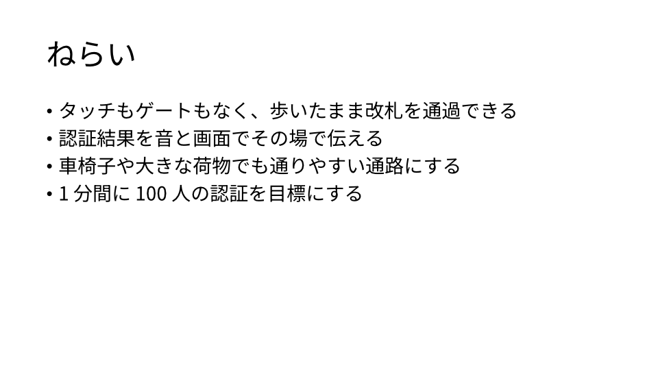
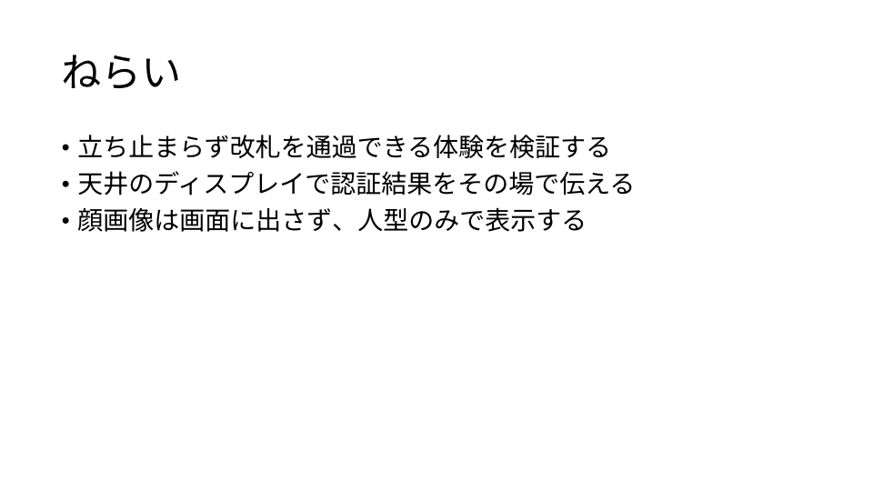
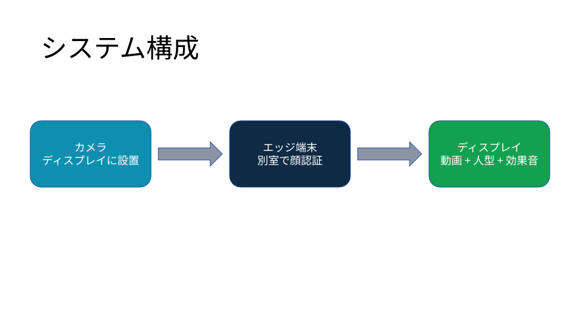
deckcraft-cli run --cmd 'design.fonts={"major":"Noto Sans JP","minor":"Noto Sans JP"}' --cmd 'slide.new={"layout":"title","title":"TOORU 顔パス改札","body":"あさなぎ線 ひかり台駅 ゲートレス改札のご提案(架空)"}' … ほか 15 個の --cmd … --save deck/proposal.deckcraftdeckcraft-cli convert deck/proposal.deckcraft deck/proposal.pptxdeckcraft-cli convert deck/proposal.deckcraft deck/proposal.pdfdeckcraft-cli render deck/proposal.deckcraft --all --scale 1 deck/slides設計の工程 / 2D CAD
v0.18.0
コマンド 457
線、図形、寸法、画層をコマンドで作図し、DXF、DWG、PDF、PNG などに書き出します。AutoCAD 風の .scr スクリプトも使えます。 AutoCAD に近い位置づけのツールです。
ゲートのない通路の断面図と平面図。天井高 3,500 mm、通路幅 6,000 mm、認証エリア 3,000〜7,000 mm を寸法線で示しました。
読み: dxf / dwg / svg / svgz 書き: dxf / dwg / dwt / svg / png / pdf
補足 負の値から始まる --window は、--window=-3000,… のように = でつなぎます。
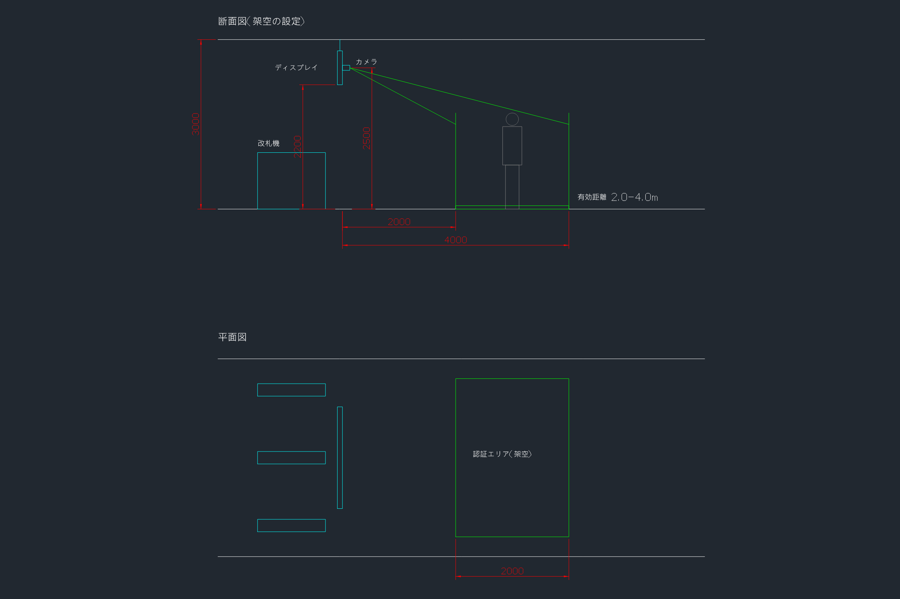
cadcraft-cli run --metric --cmd 'layer.new {"name":"STRUCT","color":"white","lineweight":0.5}' --cmd 'layer.new {"name":"EQUIP","color":4,"lineweight":0.35}' … ほか 48 個の --cmd … --save cad/gate.dxfcadcraft-cli run cad/gate.dxf --export cad/gate.png --window=-1400,-9700,12700,4400cadcraft-cli convert cad/gate.dxf cad/gate.pdf設計の工程 / 表計算
v0.17.0
コマンド 385
シート、セルの値、数式、書式をコマンドで作り、xlsx、CSV、HTML、PDF に変換します。設計書やテスト仕様書のような管理表の生成に向きます。 Excel に近い位置づけのツールです。
アプリの設計書と結合試験仕様書を 1 冊にしたブック。結合試験仕様書は、一般公開されているテスト仕様書テンプレートの書式(概要シートと、大項目・中項目・小項目、テスト観点、前提条件などの 12 列のテストケース一覧)に合わせました。実施状況は別シートを参照する COUNTIF の数式で集計し、実施結果の列には入力規則のリストを設定しています。IT-10〜IT-17 の結果は、公開ページの認証履歴画面で実際に確認したものです。実機が必要な項目は未実施です。
入出力: xlsx / csv / tsv / json / html / pdf
制約 GridCraft の PDF は日本語フォントを埋め込まず、PdfCraft の render では文字が空白でした。ここでは HTML に変換して掲載し、PDF は WordCraft で作っています(テストケース一覧は A4 横向き)。
| TOORU 結合試験仕様書 テストケース一覧(架空) | |||||||||||
| ID | 大項目 | 中項目 | 小項目 | テスト観点 | 前提条件 | テスト手順 | 期待結果 | 実施結果 | 実施日 | 担当者 | 備考 |
| IT-01 | 映像取得と顔認証 | 認証エリアの境界 | 手前の境界 3.0 m | 上方カメラの映像が顔認証に渡り、境界上の人物を判定できるか | 登録者 1 名の顔データを登録済み。通路は無人 | 1. 登録者が通路入口から歩き始める 2. 3.0 m の位置で顔がカメラに写る | 顔認証が認証 OK を返す | 未実施 | 実機が必要なため未実施 | ||
| IT-02 | 映像取得と顔認証 | 認証エリアの境界 | 奥の境界 7.0 m | エリア奥の端でも映像から判定できるか | IT-01 と同じ | 1. 登録者が 7.0 m の位置まで歩く | 顔認証が認証 OK を返す | 未実施 | 実機が必要なため未実施 | ||
| IT-03 | 映像取得と顔認証 | 認証エリアの境界 | エリアの手前 2.9 m | エリア外の映像では判定しないか | IT-01 と同じ | 1. 登録者が 2.9 m まで歩き、引き返す | 未判定のまま。履歴は記録されない | 未実施 | 実機が必要なため未実施 | ||
| IT-04 | 映像取得と顔認証 | 認証エリアの境界 | エリアの奥 7.1 m | エリアを過ぎた位置では判定しないか | 7.1 m より奥から歩き始める | 1. 登録者が 7.1 m より奥だけを歩く | 未判定のまま。履歴は記録されない | 未実施 | 実機が必要なため未実施 | ||
| IT-05 | 映像取得と顔認証 | 判定 | 未登録者 | 登録のない顔を拒否できるか | 未登録の協力者 1 名 | 1. 未登録者が認証エリアを通過する | 顔認証が認証 NG を返す | 未実施 | 実機が必要なため未実施 | ||
| IT-06 | 映像取得と顔認証 | 性能 | 1 分間に 100 人 | 混雑時も全員を判定し、通知が遅れないか | 登録者 100 名 | 1. 100 名が 1 分間で続けて通過する | 100 件すべてを判定し、応答時間が基準内 | 未実施 | 実機が必要なため未実施 | ||
| IT-07 | 顔認証と結果通知 | 案内スクリーン・スピーカー | 認証 OK | 判定結果が画面と音の両方に届くか | 案内スクリーンとスピーカーを接続済み | 1. 登録者が通過する 2. 画面表示と音を確認する | 緑の人型と案内文を表示し、OK 音を鳴らす | 未実施 | 実機が必要なため未実施 | ||
| IT-08 | 顔認証と結果通知 | 案内スクリーン・スピーカー | 認証 NG | NG の結果が画面と音の両方に届くか | IT-07 と同じ | 1. 未登録者が通過する 2. 画面表示と音を確認する | 赤の人型と案内文を表示し、NG 音を鳴らす | 未実施 | 実機が必要なため未実施 | ||
| IT-09 | 顔認証と結果通知 | 利用者の多様性 | 車椅子の登録者 | 顔の高さが低くても止まらずに通過できるか | 車椅子の登録者 1 名 | 1. 車椅子の登録者が通路を進む | 立ち止まらずに認証 OK と表示される | 未実施 | 実機が必要なため未実施 | ||
| IT-10 | 履歴記録と認証履歴画面 | 一覧 | 初期表示 | 記録した履歴が画面に表示されるか | 履歴 240 件を記録済み | 1. ブラウザで認証履歴画面を開く | 240 件を新しい順に表示する | OK | 2026-11-07 | Claude | 公開デモサイトで確認 |
| IT-11 | 履歴記録と認証履歴画面 | 絞り込み | 結果 | 絞り込みと集計が連動するか | IT-10 と同じ | 1. 結果の絞り込みで NG を選ぶ | NG の行だけを表示し、件数の表示と一致する | OK | 2026-11-07 | Claude | 公開デモサイトで確認 |
| IT-12 | 履歴記録と認証履歴画面 | 検索 | イベント ID | 記録したイベント ID で履歴を探せるか | IT-10 と同じ | 1. 検索欄にイベント ID を入力する | 該当する 1 件だけを表示する | OK | 2026-11-07 | Claude | 公開デモサイトで確認 |
| IT-13 | 履歴記録と認証履歴画面 | 絞り込み | 通路 | 記録した通路番号で絞り込めるか | IT-10 と同じ | 1. 通路の絞り込みで 2 番を選ぶ | 2 番通路の行だけを表示する | OK | 2026-11-07 | Claude | 公開デモサイトで確認 |
| IT-14 | 履歴記録と認証履歴画面 | 一覧 | 並び替え | 記録した位置で並び替えられるか | IT-10 と同じ | 1. 位置の見出しを押す | 位置の順に並び替える | OK | 2026-11-07 | Claude | 公開デモサイトで確認 |
| IT-15 | 履歴記録と認証履歴画面 | 一覧 | ページ送り | 件数の多い履歴を分けて表示できるか | IT-10 と同じ | 1. 次のページへ移動する | 次の 20 件を表示する | OK | 2026-11-07 | Claude | 公開デモサイトで確認 |
| IT-16 | 履歴記録と認証履歴画面 | 詳細 | 個人情報 | 顔画像と氏名が画面に出ないか | IT-10 と同じ | 1. 一覧の行を選ぶ | 詳細に人型の位置を表示する。顔画像と氏名は表示しない | OK | 2026-11-07 | Claude | 公開デモサイトで確認 |
| IT-17 | 履歴記録と認証履歴画面 | 詳細 | 動画との連携 | 履歴の時刻と完成動画の時刻が合うか | IT-10 と同じ。完成動画を配信済み | 1. デモ場面の行を選ぶ 2. 動画再生ボタンを押す | 完成動画が該当の時刻へ移動する | OK | 2026-11-07 | Claude | 公開デモサイトで確認 |
| TOORU 結合試験仕様書 概要(架空) | |||
| 管理項目 | |||
| プロジェクト名 | TOORU ゲートレス顔パス改札(架空) | ||
| 文書名 | 結合試験仕様書 | ||
| 作成者 | ArtCraft デモ | ||
| 作成日 | 2026-11-07 | ||
| 版数 | 1.0 | ||
| 更新履歴 | |||
| バージョン | 更新日 | 更新者 | 更新内容 |
| 1.0 | 2026-11-07 | ArtCraft デモ | 初版。認証履歴画面の項目(IT-10〜IT-17)を実施 |
| テスト概要 | |||
| テスト目的 | 機能どうしをつないだときに、データと判定結果が正しく受け渡されることを確かめる | ||
| テスト範囲(対象) | 映像取得 → 顔認証 → 結果表示・音声通知、顔認証 → 履歴記録 → 認証履歴画面の連携(F-01〜F-06) | ||
| テスト範囲(対象外) | 各機能の単体の動作、運用時の監視、カメラ設置の工事 | ||
| テスト環境 | 実機: 通路 12 m × 6 m、上方カメラ、案内スクリーン、スピーカー(数値は仮の値)/ 画面: 公開デモサイトの認証履歴画面(Chromium 系ブラウザ) | ||
| 使用データ | 架空の認証履歴 240 件。人物は匿名 ID と位置だけで、顔画像と氏名は持たない | ||
| 実施状況 | |||
| 項目数 | 17 | ||
| OK | 8 | ||
| NG | 0 | ||
| 保留 | 0 | ||
| 対象外 | 0 | ||
| 未実施 | 9 | ||
| 消化率 | 47% | ||
| 認証履歴画面 項目定義(架空) | ||||
| No | 区分 | 項目 | 形式 | 説明 |
| 1 | 集計 | 認証件数 | 数値 | 絞り込み後の件数 |
| 2 | 集計 | 認証 OK 率 | % | OK ÷(OK + NG) |
| 3 | 集計 | 平均応答時間 | ms | 判定した履歴の平均 |
| 4 | 検索 | 結果 | 選択 | すべて / OK / NG / 未判定 |
| 5 | 検索 | 通路 | 選択 | すべて / 1〜3 番 |
| 6 | 検索 | キーワード | 文字 | イベント ID または匿名 ID |
| 7 | 一覧 | 時刻 | 時:分:秒 | 既定は新しい順 |
| 8 | 一覧 | 位置 | m | 通路入口からの距離。見出しで並び替え |
| 9 | 一覧 | 結果 | 文字 + 印 | 色だけに頼らず表示する |
| 10 | 詳細 | 人型の位置 | 図 | 見取り図上の人型。顔画像は持たない |
| TOORU 機能一覧(架空) | |||
| 機能 ID | 機能 | 担当 | 概要 |
| F-01 | 映像取得 | 上方カメラ | 通路を歩く人の顔を撮影する |
| F-02 | 顔認証 | 顔認証システム | 認証エリア内の人物を判定する |
| F-03 | 結果表示 | 案内スクリーン | 判定結果を人型と案内文で表示する |
| F-04 | 音声通知 | スピーカー | 判定結果に応じて OK 音と NG 音を鳴らす |
| F-05 | 履歴記録 | 顔認証システム | 匿名 ID、位置、結果を記録する |
| F-06 | 認証履歴確認 | ブラウザ | 履歴の検索、集計、詳細確認を行う |
gridcraft-cli run --script grid/book.txt --out grid/tooru-design.xlsx --quietgridcraft-cli cat grid/tooru-design.xlsx --sheet '結合試験_概要' --range A22:B28gridcraft-cli convert grid/tooru-design.xlsx grid/spec-tests.html --sheet '結合試験仕様書'設計の工程 / UI デザイン
v0.16.0
コマンド 636
フレーム、図形、テキストを JSON スクリプトで配置し、PNG、SVG、PDF などに書き出します。Figma の REST API JSON や .sketch も読めます。 Figma に近い位置づけのツールです。
1920×1080 の案内スクリーンの画面レイアウトと、認証履歴画面のワイヤーフレーム。
読み: .figcraft / .json / .fig / .sketch / .svg / 画像 書き: png / jpg / svg / webp / pdf / fig
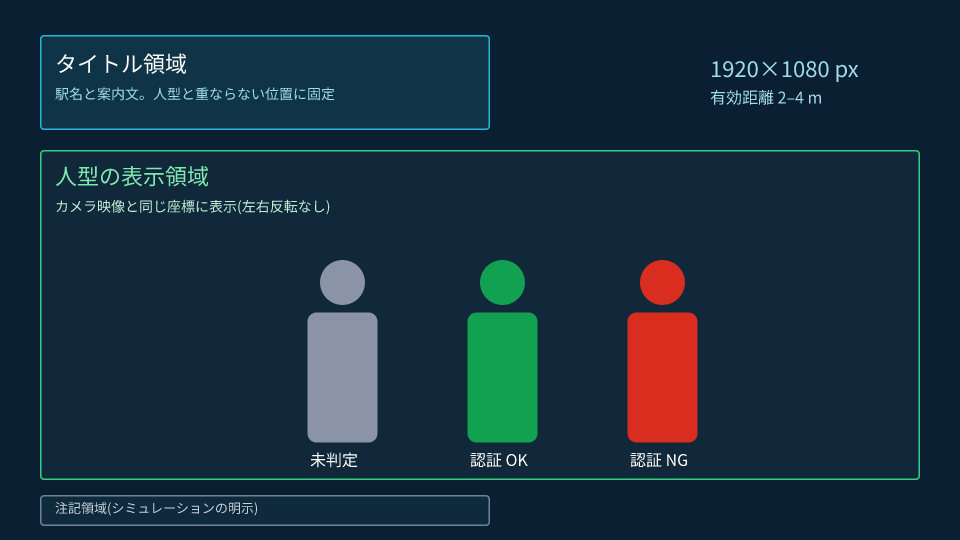
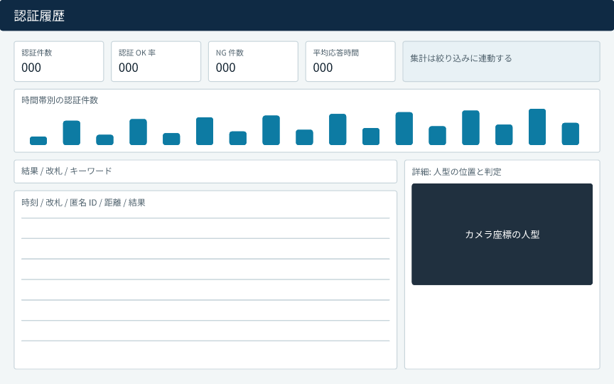
figcraft-cli run fig/layout.json --out fig/layout.figcraftfigcraft-cli render fig/layout.figcraft --out fig/layout.png --scale 0.5figcraft-cli convert fig/layout.figcraft fig/layout.svgfigcraft-cli run fig/history.json --out fig/history.figcraft素材の工程 / ベクター描画
v0.22.0
コマンド 933
パス、図形、文字をコマンドで描き、SVG、PDF、PNG などに書き出します。文字のアウトライン化もできます。 Illustrator に近い位置づけのツールです。
ロゴ、3 色の人型、OK/NG の印、結果バナー。通路の見取り図は、シナリオと同じ変換式で座標を計算して描きました。
読み: .vectorcraft / .svg / .pdf / .ai / .eps / .psd / .dxf など 書き: .svg / .pdf / .ai / .png / .dxf / .eps など
補足 paint.setFill は選択中の図形にも効きます。別の色で描くときは先に select.none を実行します。
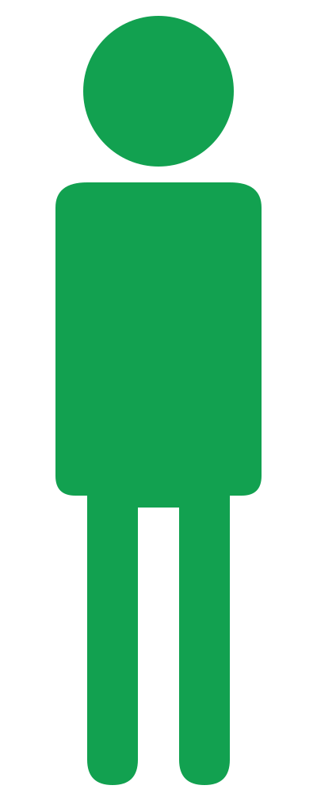
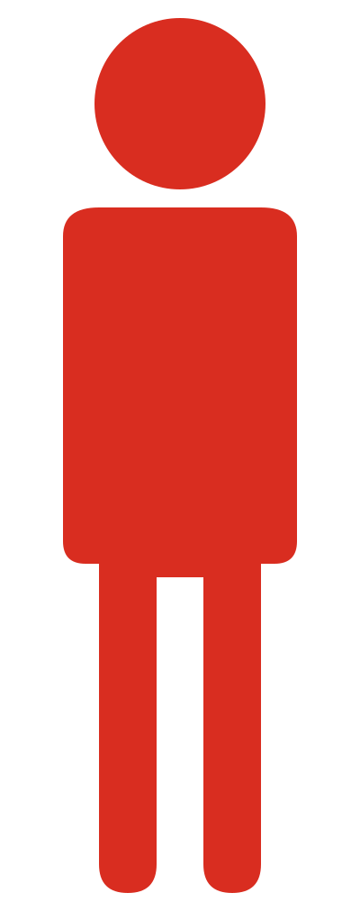
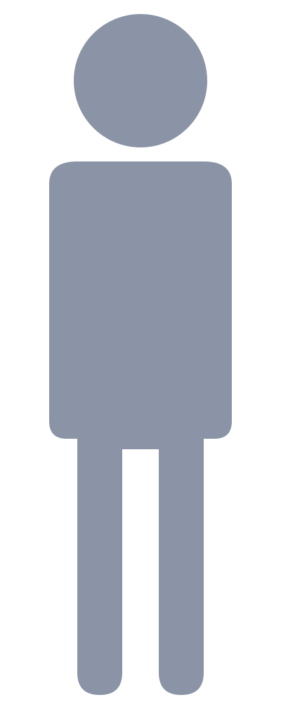
vectorcraft-cli run --commands vector/person-ok.jsonl --export vector/person-ok.png --export vector/person-ok.svg --scale 1vectorcraft-cli run --commands vector/banner-ok.jsonl --export vector/banner-ok.png --scale 1vectorcraft-cli run --commands vector/logo.jsonl --export vector/logo.vectorcraft --export vector/logo.png --scale 2vectorcraft-cli convert vector/logo.vectorcraft vector/logo.svg --outline-text素材の工程 / ラスター画像編集
v0.21.0
コマンド 993
レイヤー、フィルター、文字、調整レイヤーをコマンドで重ね、PNG、PSD、DDS などに保存します。フォルダ単位の一括処理もできます。 Photoshop に近い位置づけのツールです。
人型と印を合成した透過 PNG と、見取り図にぼかしとノイズを加えた監視モニター風の画像。
.pcraft / .psd / .png / .jpg / .tif / .webp / .exr / .tga / .dpx / .dds など
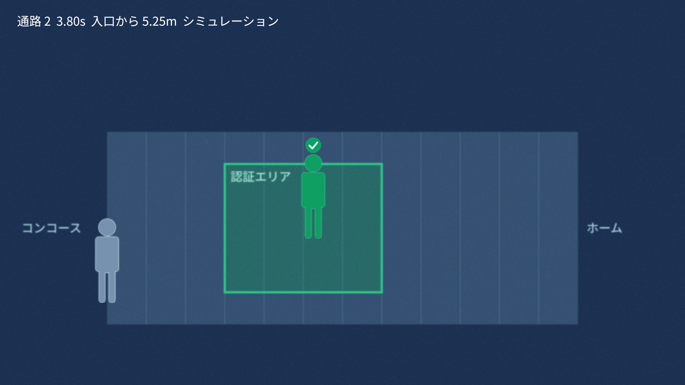
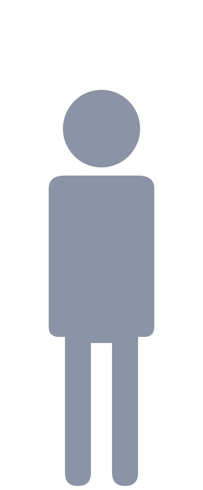
photocraft-cli run --new '{"width":500,"height":1200,"background":"transparent","name":"person-ok"}' --cmd file.placeEmbedded --params '{"path":"vector/person-ok.png","center":[250,700],"scale":100,"fit":false,"smartObject":false}' --cmd layer.layerStyle.outerGlow --params '{"color":"#35D07F","opacity":70,"size":24,"spread":8}' … ほか 1 個の --cmd … --params '{"path":"vector/mark-ok.png","center":[250,105],"scale":95,"fit":false,"smartObject":false}' --out photo/person-ok.pngphotocraft-cli run vector/plan-view.png --cmd filter.blur.gaussianBlur --params '{"radius":1.6}' --cmd filter.noise.addNoise --params '{"amount":5,"distribution":"gaussian","monochromatic":true,"seed":7}' … ほか 4 個の --cmd … --params '{"path":"photo/person-ok.png","center":[877.5,526],"scale":24,"fit":false,"smartObject":false}' --params '{"path":"photo/person-none.png","center":[300,706],"scale":24,"fit":false,"smartObject":false}' --params '{"lut":"cool"}' --params '{"x":48,"y":72,"text":"通路 2 3.80s 入口から 5.25m シミュレーション","font":"Noto Sans JP","size":34,"color":"#FFFFFF"}' --out photo/monitor-frame.png素材の工程 / 写真現像
v0.19.0
コマンド 389
写真の露出やシャドウなどをスライダー単位で調整し、JPEG、TIFF、AVIF などに書き出します。HDR やパノラマの合成もできます。 Lightroom に近い位置づけのツールです。
PhotoCraft の画像を暗い時間帯の画面に見立て、露出とシャドウの補正前後を比べました。
書き: jpg / png / tif / webp / avif / jxl / psd / dng
補足 内蔵デモの写真は風景だったため、題材に合う PhotoCraft の画像を入力にしました。
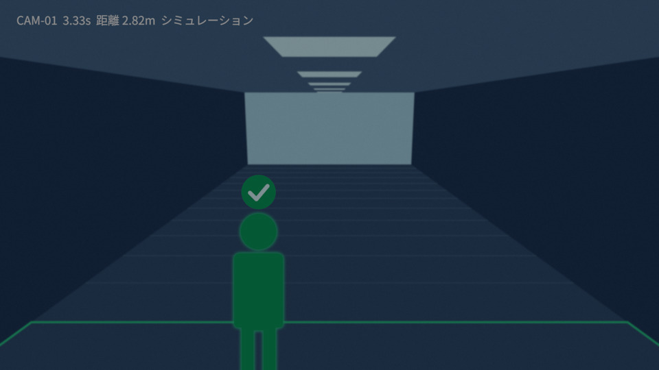
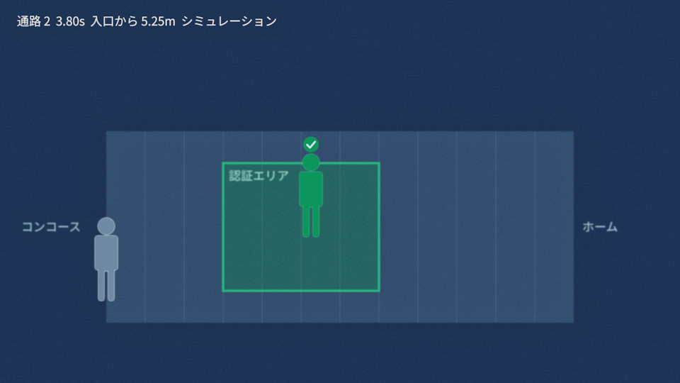
lightcraft-cli render photo/monitor-frame.png -o light/before.jpg --set light.exposure=-1.8 --size 960lightcraft-cli render light/before.jpg -o light/after.jpg --set light.exposure=1.6 --set light.shadows=40 --size 960素材の工程 / オーディオ編集
v0.18.0
コマンド 483
トラック、MIDI、プラグインをコマンドで組んでミックスダウンします。音声ファイルの変換や音量の正規化もできます。 Audition に近い位置づけのツールです。
認証 OK/NG の効果音。録音素材は使わず、内蔵シンセに MIDI ノートを入力して合成しました。
読み: wav / aiff / flac / mp3 / ogg / m4a など 書き: wav / bwf / aiff / flac
補足 書き出しは mp3 に対応していないため、WAV のまま掲載しています。音の印象は耳では確認しておらず、ピークと長さの数値だけを確認しました。
soundcraft-cli run --cmd 'track.new={"kind":"instrument","format":"stereo","name":"OK","instrument":"subtractive_synth"}' --cmd 'mix.insert={"track":1,"plugin":"plate_reverb","params":{"mix":22,"decay":0.8}}' … ほか 3 個の --cmd … --bounce sound/ok-raw.wav --start 0 --end 1.0soundcraft-cli run --cmd 'track.new={"kind":"instrument","format":"stereo","name":"NG","instrument":"subtractive_synth"}' --cmd 'mix.insert={"track":1,"plugin":"plate_reverb","params":{"mix":12,"decay":0.5}}' … ほか 3 個の --cmd … --bounce sound/ng-raw.wav --start 0 --end 1.0soundcraft-cli convert sound/ok-raw.wav sound/ok.wav --bit-depth 16 --normalize映像の工程 / モーショングラフィックス
v0.22.0
コマンド 760
コンポジションを JavaScript で組み立て、キーフレーム付きの映像をレンダリングします。テンプレートに値を流し込むこともできます。 After Effects に近い位置づけのツールです。
案内スクリーンの背景動画 15 秒。通路の見取り図、流れる光の帯、駅名の表示を 1 本のスクリプトで作りました。
書き: h264 / hevc / av1 / prores / webm / 連番画像 / gif / wav / aiff
effectcraft-cli script ../scripts/screen-bg.jsx --empty --save-as effect/bg.ecprojeffectcraft-cli render --project effect/bg.ecproj --comp screen-bg --out effect/screen-bg.mp4 --format h264 --bitrate 8000effectcraft-cli render-frame --project effect/bg.ecproj --comp screen-bg --time 5 --out effect/screen-bg.png --max-side 960effectcraft-cli render --project effect/bg.ecproj --comp screen-bg --out effect/screen-bg-web.mp4 --format h264 --resolution half --bitrate 2500映像の工程 / 動画編集
v0.18.0
コマンド 717
シーケンスに素材を並べ、キーフレームや音を編集して書き出します。読み込みから書き出しまでスクリプトで実行できます。 Premiere に近い位置づけのツールです。
背景動画、人型、結果バナー、効果音を統合した完成動画。シナリオの位置データをそのままキーフレームにしました。
書き: h264 / hevc / prores / dnxhr / png / gif / wav / aac など
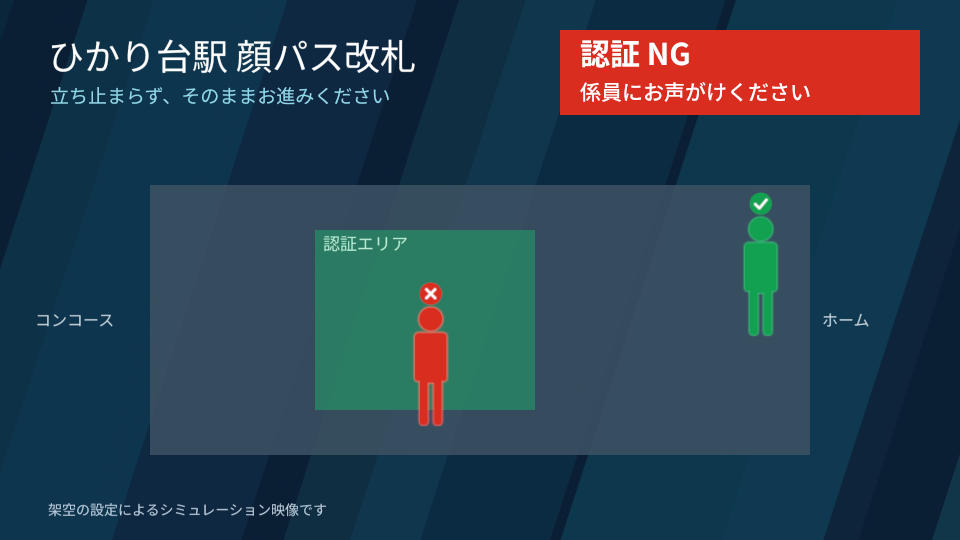
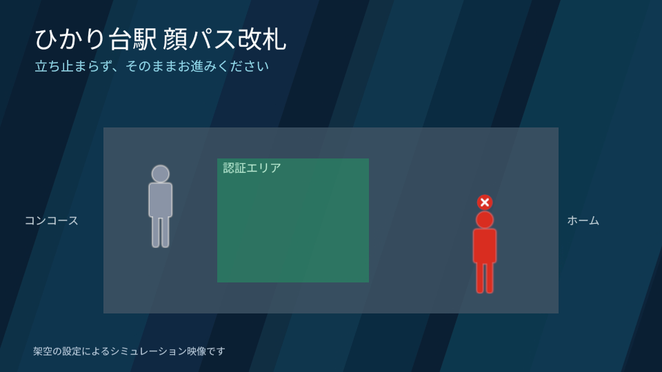
filmcraft-cli --compact --save-as film/tooru.fcproj run film/1-import.jsonlfilmcraft-cli --compact --project film/tooru.fcproj --save run film/2-place.jsonlfilmcraft-cli --compact --project film/tooru.fcproj --save run film/3-keyframes.jsonlfilmcraft-cli --project film/tooru.fcproj render --seconds 3.733 --out film/frame-ok.png --scale 0.5文書の工程 / ワープロ
v0.16.0
コマンド 656
Markdown などの原稿を docx や PDF に変換します。コマンドでの文書編集や、コメント付きの出力もできます。 Word に近い位置づけのツールです。
A4 の仕様書。Markdown の原稿から docx を作り、PDF に変換しました。
docx / doc(読みのみ) / pdf / odt / rtf / html / md / tex / txt / json / png / xml
補足 --save を 2 回指定すると docx しか保存されず、エラーも出ませんでした。ここでは変換を分けて実行しています。
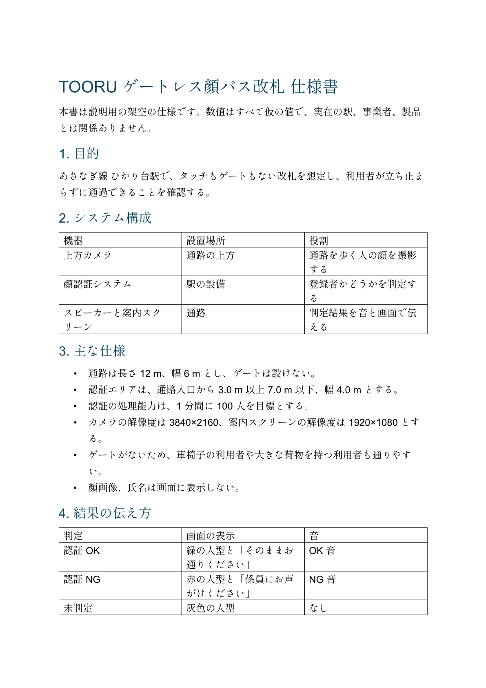
wordcraft-cli convert grid/spec-summary.html grid/spec-summary.pdfwordcraft-cli run --file grid/spec-tests.html --cmd 'layout.orientation={"value":"landscape"}' --cmd 'layout.margins={"top":30,"bottom":30,"left":36,"right":36}' … ほか 27 個の --cmd … --save grid/spec-tests.pdfwordcraft-cli convert ../data/spec.md word/spec.docxwordcraft-cli convert word/spec.docx word/spec.pdf文書の工程 / DTP・ページレイアウト
v0.18.0
コマンド 555
テキストフレーム、画像、カラースウォッチをコマンドで組版し、PNG や印刷用 PDF に書き出します。 InDesign に近い位置づけのツールです。
駅に掲示する A4 の利用案内チラシ。3 mm の塗り足しを付けて組版しました。
書き: png / pdf / .designcraft など(PDF/X の検査機能つき)
制約 PDF/X-4 の検査は通っていません。RGB の色と画像が残っているため、印刷入稿には CMYK への変換が必要です。
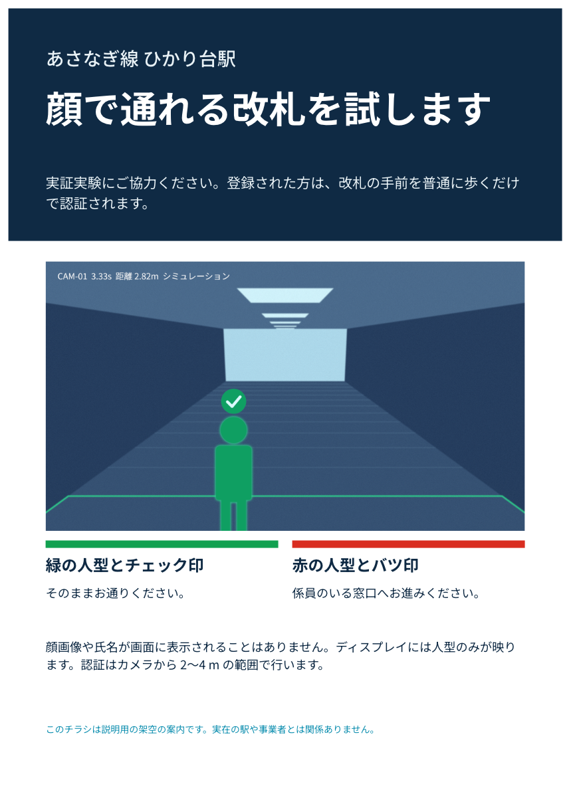
designcraft-cli run --cmd 'file.new={"preset":"A4","title":"TOORU 利用案内","margins":36,"bleed":9,"primaryTextFrame":false}' --cmd 'swatch.create={"name":"Navy","color":"#0F2A44"}' … ほか 41 個の --cmd … --scale 1.4 --export design/flyer.png --export design/flyer.pdf --export design/flyer.designcraft文書の工程 / PDF 編集
v0.19.0
ツール 195
PDF の結合、抽出、分割、文書情報の編集、テキスト抽出、偽の墨消しの検査などを行います。 Acrobat に近い位置づけのツールです。
仕様書、図面、結合試験仕様書(概要 1 ページ、テストケース一覧 2 ページ)、チラシを 1 冊に結合した 6 ページの PDF。文書情報を書き込み、墨消しの検査も実行しました。
読み書き: pdf ページの書き出し: png / jpg / tif
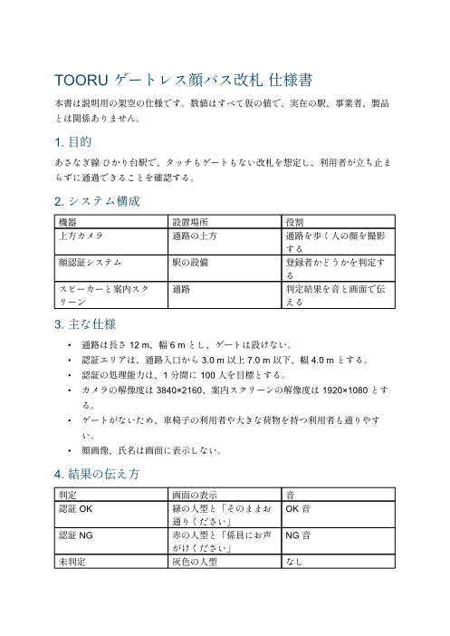
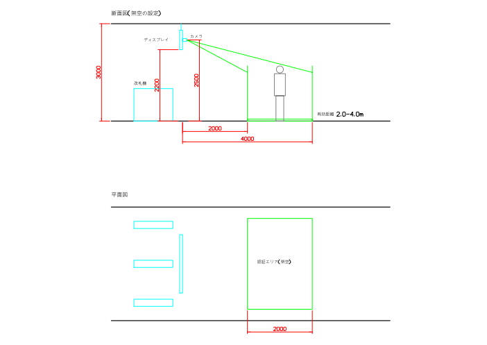
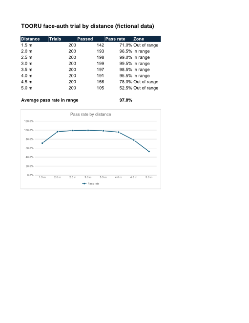
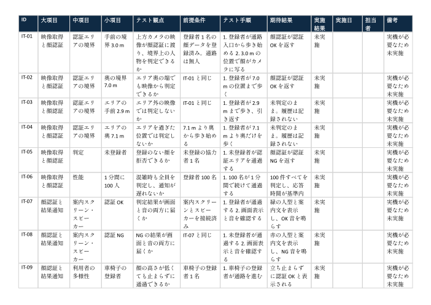
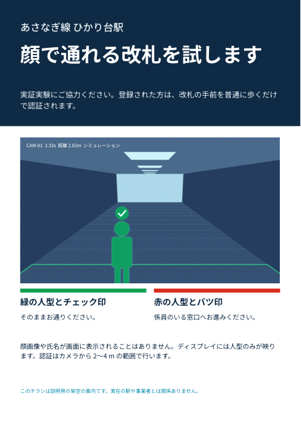
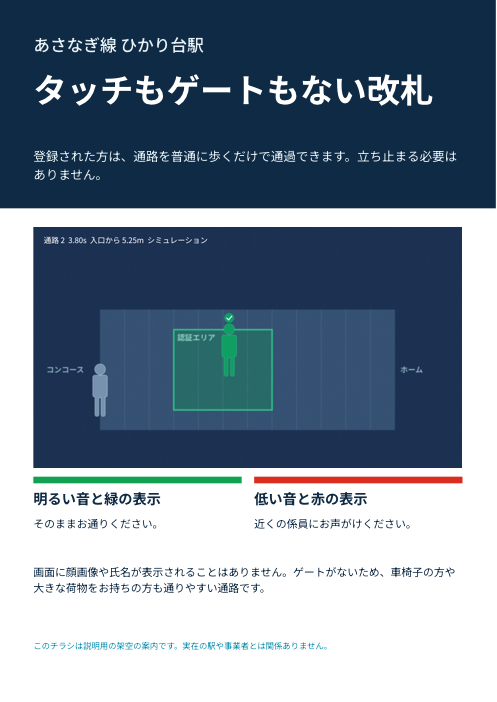
pdfcraft-cli combine word/spec.pdf cad/gate.pdf grid/spec-summary.pdf grid/spec-tests.pdf design/flyer.pdf --out pdf/bundle-raw.pdfpdfcraft-cli edit pdf/bundle-raw.pdf --out pdf/tooru-bundle.pdf --title 'TOORU documents (fictional)' --author 'ArtCraft CLI demo'pdfcraft-cli info pdf/tooru-bundle.pdfpdfcraft-cli extract pdf/tooru-bundle.pdf --pages 1-2 --out pdf/spec-and-drawing.pdf出力ファイルの拡張子を変えるだけで、書き出す形式を切り替えられます。
commands で一覧を、describe で引数を確認できます。ツールによって名前が少し異なります。
run は複数のコマンドを順に実行し、最後に保存や書き出しを行います。
多くのツールは mcp で MCP サーバーとして起動できます。
入力と同じファイルへの保存は原則拒否され、--in-place で許可します。
JSON はシングルクォートで囲むか、スクリプトファイルに分けると安全です。
各バージョンで今回確認した挙動です。
| ツール | 起きたこと | 対処 |
|---|---|---|
| GridCraft | PDF に日本語フォントが埋め込まれない | PdfCraft の render では文字が空白でした。HTML に変換し、WordCraft で PDF にします。 |
| DesignCraft | PDF/X-4 の検査が通らない | RGB の色と画像が残るためです。印刷入稿には CMYK への変換が必要です。 |
| DesignCraft | 枠を作った後の文字設定が本文に効かない | frame.create に caret: true を付け、type.char の後に text.insert で文字を入れます。 |
| WordCraft | --save の 2 回指定で片方しか保存されない | 変換を別々に実行します。エラーは出ません。 |
| VectorCraft | 色の指定が直前の図形にも効く | 描く前に select.none で選択を解除します。線幅は stroke.set で指定します。 |
| SoundCraft | mp3 に書き出せない | 書き出せるのは wav、bwf、aiff、flac です。 |